Rough preview, untested
Stage 1 rotating spike — distinct steel options
Throwaway visual only. Body and teeth stay on background palette 7. Floor blue and floor shadow are locked. Only the highlight and the base colors were retuned. This has not gone through the full test suite. The official bronze page is unchanged.
What you already saw as “bronze” in this room is actually a gray steel row already in the live CRAM: white, mid gray, dark gray, black. The YAML weathered-bronze row is included below as a poked reference so you can compare it with the three new options.
Colors (RGB555 words, same as the YAML)
| Row | Highlight (0) | Floor blue (1, locked) | Base (2) | Floor shadow (3, locked) |
|---|---|---|---|---|
| Current main, this room | 7FFF #FFFFFF | 5294 #A5A5A5 (not locked here) | 2108 #424242 | 0000 #000000 |
| YAML bronze (poked reference) | 7FFF #FFFFFF | 7E94 #A5A5FF | 19B2 #946B31 | 3D4A #52527B |
| 1. Darker cool steel | 5E92 #94A5BD | 7E94 #A5A5FF | 20C5 #293142 | 3D4A #52527B |
| 2. Warmer steel | 4ED8 #C5B59C | 7E94 #A5A5FF | 18E8 #423A31 | 3D4A #52527B |
| 3. Charcoal with rust | 1554 #A55229 | 7E94 #A5A5FF | 18A5 #292931 | 3D4A #52527B |
Wall YAML BG6, for contrast: 7FFF #FFFFFF, 7F1B #DEC5FF, 3D08 #42427B, 0000 #000000. In this room the visible brick ledges also use a neutral gray (#A5A5A5 / #424242), which is why current main can blend into the walls.
Side by side — rotation frame 1
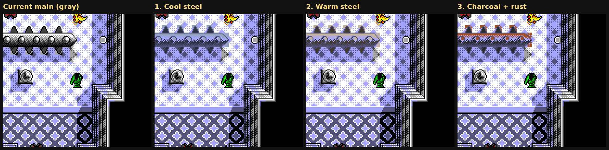
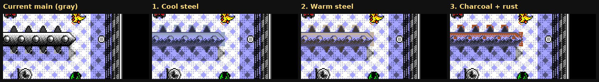
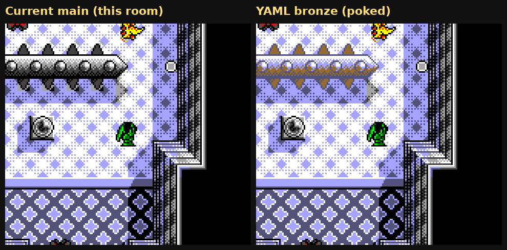
Current main — as it looks in this room today
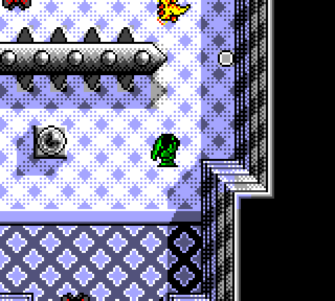


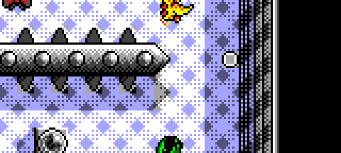
1. Darker cool steel
Charcoal gunmetal highlight and base, cooler and darker than the gray walls.
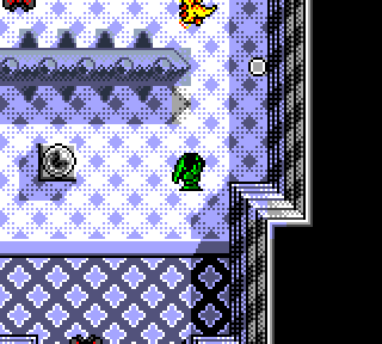
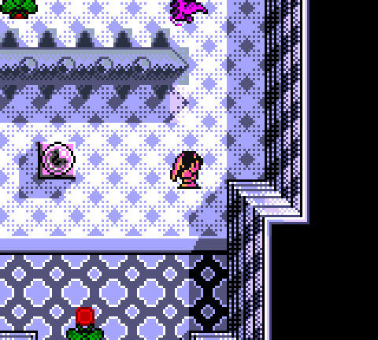
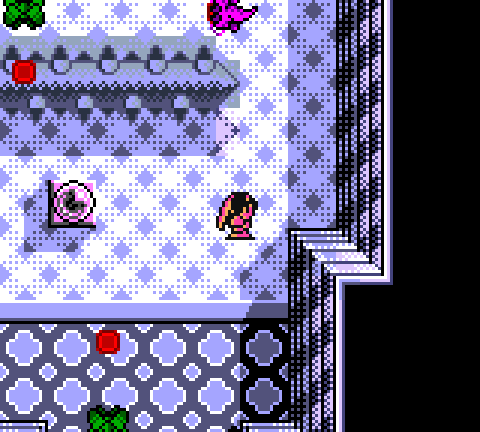
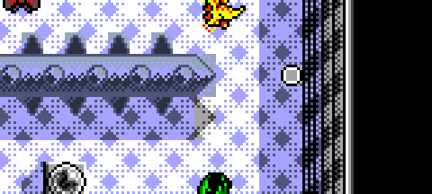
2. Warmer steel
A slightly warm gray, like aged iron, not the wall slate.
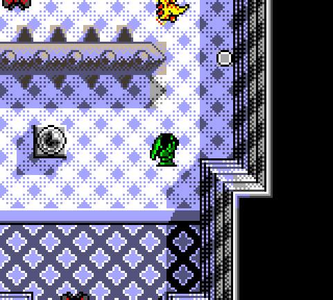
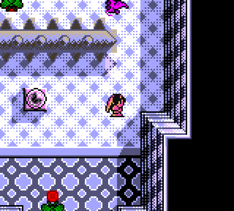
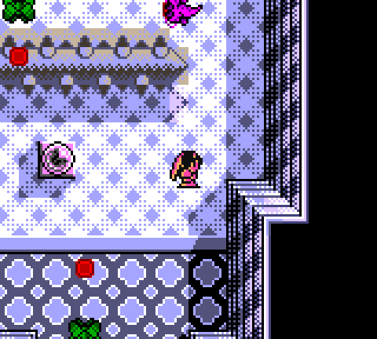
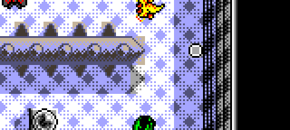
3. Charcoal with a hint of rust
Dark steel body with a rusty-brown highlight. This one stands furthest from the blue-gray walls.
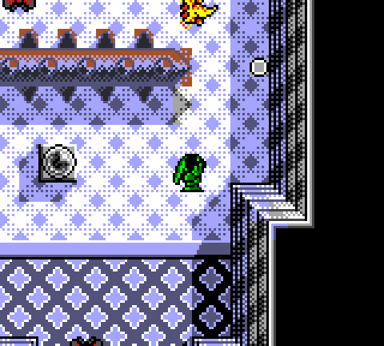
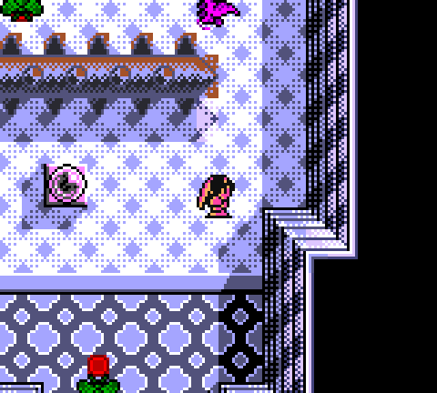
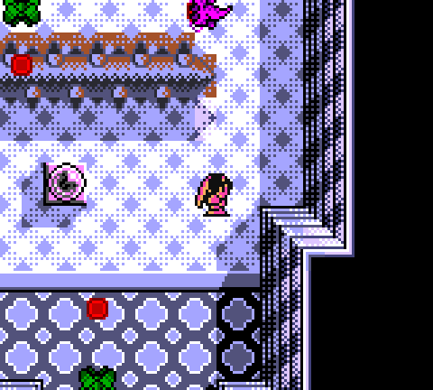
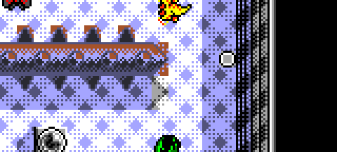
YAML bronze, poked for reference
This is the weathered-bronze row from the palette file (white highlight, bronze base), forced into CRAM. It is not what the current official screenshots of this room show.
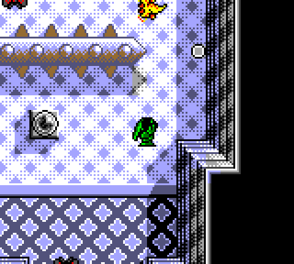


Stage 1 power pickup, palette 5, unchanged
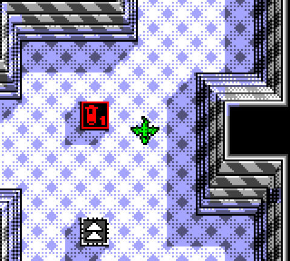